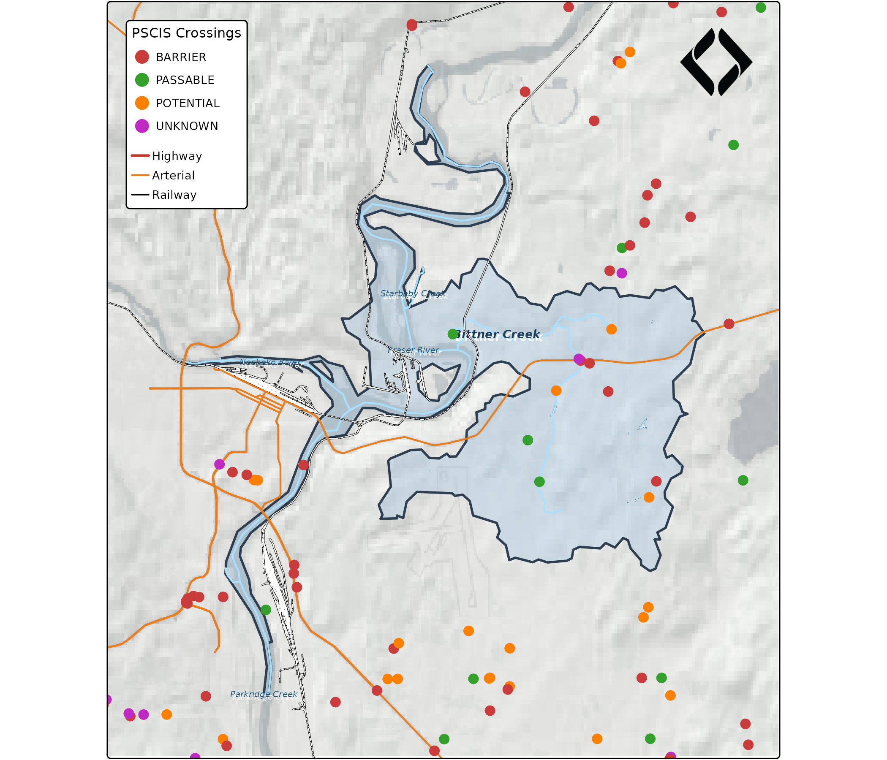

gq is a style management system for cartography. Define your map styles once in a JSON registry, then translate them to any rendering target — tmap, mapgl, leaflet, ggplot2. Change a color in one place and every map updates.
The problem
New Graph produces maps across multiple tools — QGIS for field work, tmap for bookdown reports, MapLibre GL for web maps. Symbology (colors, line weights, classification breaks) is duplicated manually across each tool. Change a color in QGIS → manually update R code → manually update web styles. It doesn’t scale.
The solution
A canonical style registry that serves as the single source of truth:
QGIS Project (.qgs)
↓ gq_qgs_extract()
registry.json
↓ gq_tmap_style() / gq_mapgl_style()
tmap, mapgl, leaflet, ggplot2Real data: Bittner Creek
gq ships with real spatial data for Bittner Creek near Prince George — a ~56 km² watershed pulled from the BC Freshwater Atlas and bcfishpass via the newgraph database. This includes the watershed boundary, FWA streams, lakes, DRA roads, CN railway, and 95 PSCIS fish passage assessments.
library(gq)
library(sf)
#> Linking to GEOS 3.12.1, GDAL 3.8.4, PROJ 9.4.0; sf_use_s2() is TRUE
data(bittner_wsd, bittner_streams, bittner_lakes,
bittner_roads, bittner_railway, bittner_pscis,
package = "gq")
cat("Watershed:", round(bittner_wsd$area_ha), "ha\n")
#> Watershed: 5600 ha
cat("Streams:", nrow(bittner_streams), "segments\n")
#> Streams: 150 segments
cat("Lakes:", nrow(bittner_lakes), "\n")
#> Lakes: 12
cat("Roads:", nrow(bittner_roads), "\n")
#> Roads: 5576
cat("PSCIS crossings:", nrow(bittner_pscis), "\n")
#> PSCIS crossings: 95Load the style registry
The styles come from a QGIS project extracted with
gq_qgs_extract(). The registry maps layer names to
rendering properties — fill colors, stroke weights, classification
breaks:
reg_path <- system.file("examples", "reg_demo.json", package = "gq")
reg <- gq_registry_read(reg_path)
# What layers did we extract?
names(reg$layers)
#> [1] "conservancy" "crossings_pscis_assessment"
#> [3] "lake" "provincial_park"
#> [5] "railway" "roads_dra"
#> [7] "stream_labels" "streams_all"
# Lake style — fill, stroke, opacity, label settings all captured
reg$layers$lake
#> $type
#> [1] "polygon"
#>
#> $source_layer
#> [1] "whse_basemapping.fwa_lakes_poly"
#>
#> $fill
#> $fill$color
#> [1] "#dcecf4"
#>
#> $fill$opacity
#> [1] 0.7
#>
#>
#> $stroke
#> $stroke$color
#> [1] "#1f78b4"
#>
#> $stroke$width
#> [1] 0.2
#>
#>
#> $label
#> $label$font
#> [1] "Helvetica"
#>
#> $label$size
#> [1] 10
#>
#> $label$style
#> [1] "italic"
#>
#> $label$color
#> [1] "#1f78b4"
#>
#> $label$halo
#> $label$halo$color
#> [1] "#ffffff"
#>
#> $label$halo$width
#> [1] 0.3tmap: static map for reports
gq_tmap_style() converts registry entries directly to
tmap v4 arguments. Here’s a study area map following New Graph
cartographic conventions:
library(tmap)
library(maptiles)
sf_use_s2(FALSE)
#> Spherical geometry (s2) switched off
# --- Basemap: Positron-NoLabels × hillshade blend ---
# Label-free raster basemap gives terrain relief without competing labels.
# We control all text ourselves via tm_text().
# See cartography skill for scale-based basemap selection guidelines.
bbox <- st_bbox(bittner_wsd)
bbox["xmin"] <- bbox["xmin"] - 0.03
bbox["xmax"] <- bbox["xmax"] + 0.03
bbox["ymin"] <- bbox["ymin"] - 0.015
bbox["ymax"] <- bbox["ymax"] + 0.015
bbox_sf <- st_as_sfc(bbox) |> st_set_crs(4326)
positron <- get_tiles(bbox_sf, provider = "CartoDB.PositronNoLabels", zoom = 10, crop = TRUE)
relief <- get_tiles(bbox_sf, provider = "Esri.WorldShadedRelief", zoom = 10, crop = TRUE)
relief_rs <- terra::resample(relief, positron)
p_n <- positron / 255
r_g <- terra::mean(relief_rs) / 255
blended <- terra::clamp(p_n * (r_g ^ 0.5) * 255, lower = 0, upper = 255)
basemap_stars <- stars::st_as_stars(blended)
# --- Data prep ---
streams_display <- bittner_streams[bittner_streams$stream_order >= 3, ]
roads_hwy <- bittner_roads[bittner_roads$road_type == "RH1", ]
roads_art <- bittner_roads[bittner_roads$road_type %in% c("RA1", "RA2"), ]
# Stream labels: dissolve named streams to single point per name
stream_labels <- bittner_streams[
!is.na(bittner_streams$gnis_name) & bittner_streams$stream_order >= 4, ]
stream_labels <- do.call(rbind, lapply(
split(stream_labels, stream_labels$gnis_name),
function(x) {
combined <- st_union(x)
pt <- st_point_on_surface(combined)
st_sf(gnis_name = x$gnis_name[1], geometry = pt, crs = st_crs(x))
}
))
#> although coordinates are longitude/latitude, st_union assumes that they are
#> planar
#> Warning in st_point_on_surface.sfc(combined): st_point_on_surface may not give
#> correct results for longitude/latitude data
#> although coordinates are longitude/latitude, st_union assumes that they are
#> planar
#> Warning in st_point_on_surface.sfc(combined): st_point_on_surface may not give
#> correct results for longitude/latitude data
#> although coordinates are longitude/latitude, st_union assumes that they are
#> planar
#> Warning in st_point_on_surface.sfc(combined): st_point_on_surface may not give
#> correct results for longitude/latitude data
#> although coordinates are longitude/latitude, st_union assumes that they are
#> planar
#> Warning in st_point_on_surface.sfc(combined): st_point_on_surface may not give
#> correct results for longitude/latitude data
#> although coordinates are longitude/latitude, st_union assumes that they are
#> planar
#> Warning in st_point_on_surface.sfc(combined): st_point_on_surface may not give
#> correct results for longitude/latitude data
#> although coordinates are longitude/latitude, st_union assumes that they are
#> planar
#> Warning in st_point_on_surface.sfc(combined): st_point_on_surface may not give
#> correct results for longitude/latitude data
# Separate Bittner Creek for emphasis
bittner_label <- stream_labels[stream_labels$gnis_name == "Bittner Creek", ]
other_labels <- stream_labels[stream_labels$gnis_name != "Bittner Creek", ]
# PSCIS classification from the registry — same colors as QGIS
pscis_cls <- gq_tmap_classes(reg$layers$crossings_pscis_assessment)
# New Graph logo (bundled, pre-resized to square for tm_logo)
logo_path <- system.file("logo", "nge_icon_200.png", package = "gq")
# --- Map composition ---
m <- tm_shape(basemap_stars) +
tm_rgb() +
tm_shape(bittner_wsd) +
tm_polygons(fill = "#a8c8e0", fill_alpha = 0.4, col = "#2c3e50", lwd = 1.8) +
tm_shape(bittner_lakes) +
do.call(tm_polygons, gq_tmap_style(reg$layers$lake)) +
tm_shape(streams_display) +
tm_lines(col = "#a9e0ff", lwd = 1.4) +
tm_shape(other_labels) +
tm_text("gnis_name", size = 0.4, fontface = "italic", col = "#1a5276",
options = opt_tm_text(shadow = TRUE, remove_overlap = TRUE)) +
tm_shape(bittner_label) +
tm_text("gnis_name", size = 0.55, fontface = "bold.italic", col = "#1a3c5e",
options = opt_tm_text(shadow = TRUE)) +
tm_shape(bittner_railway) +
tm_lines(col = "black", lwd = 1.2) +
tm_shape(bittner_railway) +
tm_lines(col = "white", lwd = 0.6, lty = "42") +
tm_shape(roads_hwy) +
tm_lines(col = "#c0392b", lwd = 2.0) +
tm_shape(roads_art) +
tm_lines(col = "#e67e22", lwd = 1.4) +
tm_shape(bittner_pscis) +
tm_dots(
fill = pscis_cls$field,
fill.scale = tm_scale_categorical(
values = pscis_cls$values,
labels = pscis_cls$labels
),
fill.legend = tm_legend(show = FALSE),
size = 0.5,
col = "white",
lwd = 0.8
) +
# Manual legend for full control — PSCIS crossings + infrastructure
tm_add_legend(
type = "symbols",
labels = pscis_cls$labels,
fill = pscis_cls$values,
col = "white",
size = 0.8,
shape = 21,
title = "PSCIS Crossings"
) +
tm_add_legend(
type = "lines",
labels = c("Highway", "Arterial", "Railway"),
col = c("#c0392b", "#e67e22", "black"),
lwd = c(2, 1.4, 1.2)
) +
tm_logo(logo_path, position = c("right", "top"), height = 3) +
tm_layout(
frame = TRUE,
inner.margins = c(0, 0, 0, 0),
outer.margins = c(0.002, 0.002, 0.002, 0.002),
legend.position = c("left", "top"),
legend.frame = TRUE,
legend.bg.color = "white",
legend.bg.alpha = 0.85,
legend.text.size = 0.55,
legend.title.size = 0.65
)
m
Every color on that map traces back to the registry. The PSCIS
crossing colors (red = barrier, green = passable, orange = potential,
purple = unknown) match the QGIS project exactly because they come from
the same registry.json.
How the style translation works
The registry stores canonical properties.
gq_tmap_style() translates them to tmap’s parameter
names:
# Registry → tmap for a polygon layer
gq_tmap_style(reg$layers$lake)
#> $fill
#> [1] "#dcecf4"
#>
#> $fill_alpha
#> [1] 0.7
#>
#> $col
#> [1] "#1f78b4"
#>
#> $lwd
#> [1] 0.2
# Registry → tmap for a line layer
gq_tmap_style(reg$layers$railway)
#> $col
#> [1] "#000000"
#>
#> $lwd
#> [1] 0.4For classified layers, gq_tmap_classes() extracts the
field name, color vector, and labels — ready for
tm_scale_categorical():
gq_tmap_classes(reg$layers$crossings_pscis_assessment)
#> $field
#> [1] "barrier_result_code"
#>
#> $values
#> BARRIER PASSABLE POTENTIAL UNKNOWN
#> "#ca3c3c" "#33a02c" "#ff7f00" "#bf2ac4"
#>
#> $labels
#> [1] "BARRIER" "PASSABLE" "POTENTIAL" "UNKNOWN"MapLibre GL: interactive web map
The same registry produces MapLibre GL paint properties for web maps
via gq_mapgl_style():
library(mapgl)
# PSCIS match expression from registry — same classification as tmap
pscis_expr <- gq_mapgl_classes(reg$layers$crossings_pscis_assessment)
# Layer styles from registry
lake_style <- gq_mapgl_style(reg$layers$lake)
railway_style <- gq_mapgl_style(reg$layers$railway)
maplibre(
bounds = as.numeric(st_bbox(bittner_wsd))
) |>
add_fill_layer(
id = "watershed",
source = bittner_wsd,
fill_color = "#a8c8e0",
fill_opacity = 0.4
) |>
add_fill_layer(
id = "lakes",
source = bittner_lakes,
fill_color = lake_style$paint[["fill-color"]],
fill_opacity = lake_style$paint[["fill-opacity"]]
) |>
add_line_layer(
id = "streams",
source = streams_display,
line_color = "#a9e0ff",
line_width = 1
) |>
add_line_layer(
id = "railway",
source = bittner_railway,
line_color = railway_style$paint[["line-color"]],
line_width = 1.5
) |>
add_line_layer(
id = "roads-hwy",
source = roads_hwy,
line_color = "#c0392b",
line_width = 2
) |>
add_circle_layer(
id = "pscis",
source = bittner_pscis,
circle_color = pscis_expr,
circle_radius = 5,
circle_stroke_color = "white",
circle_stroke_width = 1
)The PSCIS crossings use a MapLibre match expression
built from the registry:
str(pscis_expr)
#> List of 11
#> $ : chr "match"
#> $ :List of 2
#> ..$ : chr "get"
#> ..$ : chr "barrier_result_code"
#> $ : chr "BARRIER"
#> $ : chr "#ca3c3c"
#> $ : chr "PASSABLE"
#> $ : chr "#33a02c"
#> $ : chr "POTENTIAL"
#> $ : chr "#ff7f00"
#> $ : chr "UNKNOWN"
#> $ : chr "#bf2ac4"
#> $ : chr "#888888"Same classification, same colors — one source of truth for both static and interactive maps.
Extract from QGIS
If you have an existing QGIS project, gq_qgs_extract()
parses the .qgs XML and builds a registry — no PyQGIS needed:
qgs_path <- system.file("examples", "mini_project.qgs", package = "gq")
extracted <- gq_qgs_extract(qgs_path)
names(extracted$layers)
#> [1] "lakes" "streams" "crossings" "roads"Write it out as your registry:
jsonlite::write_json(extracted, "registry.json", pretty = TRUE, auto_unbox = TRUE)One source of truth
The workflow:
- Design styles in QGIS (the best visual tool for cartography)
- Extract with
gq_qgs_extract()→registry.json - In R:
gq_tmap_style()for static report maps,gq_mapgl_style()for web - Change a color in the registry → every map updates
No more copy-pasting hex codes across files.